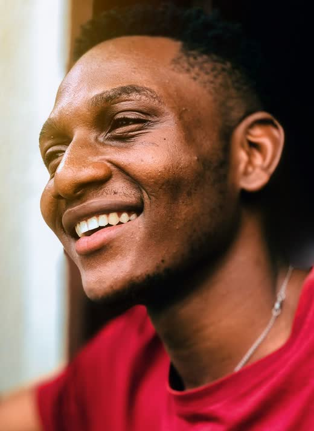

Page des vidéos verticales : proposition à valider
Rien n'est modifié dans l'application. J'ai relu la page actuelle en entier (post_video_format_tel_details.dart, 3 777 lignes, et la page « Afrolook vidéos » ouverte par le bouton Vidéos). Voici ce que j'ai trouvé, puis la nouvelle page, puis les points à valider.
1. La page actuelle, telle que je l'ai relue
Vibe vidéos👁
+
@aminata145 k12,4 k3209 k58Awa trop forte !Koffi 🔥🔥🔥Jay bravo
il y a 2 h
Ma tenue du week-end, dites-moi ce que vous en pensez
🌹 12👑 5💎 3
Utiliser · 🪙 5Score 78🪙 240 reçues
Ajouter un commentaire…😀 ➤
Ce qui encombre
- Commentaires qui défilent au-dessus du bas (liste animée avec fondu), en plus du dernier commentaire.
- Colonne de droite à 9 éléments : avatar + abonnement, nom, nombre d'abonnés, cœur, commentaires, barre de stats (inerte), favoris, menu. Icônes de 4 couleurs (rouge, blanc, bleu, jaune) et de 3 tailles (30, 33, 35), sans fond.
- Bas de l'écran : heure, description, liste de cadeaux, bouton musique, score, pièces reçues, carte Défi, champ de commentaire avec stickers.
- Haut : titre « Vibe vidéos », bouton œil (masquer l'interface), badges tier et pays, cadeau rapide, flèche retour.
- Pages intercalées : pub plein écran toutes les 3 vidéos, pub « midroll » 5 secondes avant la fin (la vidéo se met en pause), « créateurs et canaux à suivre » toutes les 10, promo AfroShop, rappel de monétisation, fin de fil.
- Fluidité : une animation d'apparition est rejouée à chaque reconstruction de la colonne, les commentaires se mettent à jour par minuteur, et tout l'écran se redessine à chaque changement de vidéo.
Le bouton « Vidéos » du bas
Il ouvre aujourd'hui une autre page : une liste de cartes « Afrolook vidéos » avec barre du haut. Toucher une vidéo ouvre ensuite la page plein écran ci-dessus. Il y a donc deux pages pour la même chose.
2. La nouvelle page
SuivisPour toiLives
+
12,4 k32058Partager@jay.beatsFait sur Afrolook50 k abonnés
Studio ce soir, nouveau son #afrobeats
♪ Son original · jay.beatsAjouter un commentaire…

SuivisPour toiLives
+
12,4 k32058Partager@zuri.danseFait sur Afrolook58 k abonnés
Chorégraphie du week-end
♪ Son original · zuri.danseAjouter un commentaire…

SuivisPour toiLives
AnnonceJupe en wax, taille uniqueboutique_mariam
AcheterGlisse pour continuer
← Commentaires (320)

awa_kTrop forte, bravo !
koffiLa chorégraphie est incroyable
mariamOn veut la suite
Ajouter un commentaire…
➤clavier
3. Ce qui change, point par point
| Sujet | Décision proposée |
|---|---|
| Haut de l'écran | Suivis · Pour toi · Lives, centré, onglet actif souligné (comme sur le site). Rien d'autre, sauf la flèche retour quand on arrive d'une autre page et le son (muet / actif). |
| Commentaires qui défilent | Supprimés (liste animée, minuteur, dernier commentaire). |
| Champ « Ajouter un commentaire… » | Reste en bas, mais ce n'est plus un vrai champ : toucher ouvre la page des commentaires (clavier ouvert). Plus de commentaire écrit sur la vidéo. Les stickers se choisissent sur la page des commentaires. |
| Colonne de droite | 5 boutons + menu : créateur (+ abonner), j'aime, commentaires, cadeau, partager, puis « ⋯ ». Favoris, statistiques, signaler, supprimer, traduire passent dans le menu « ⋯ ». |
| Lisibilité | Chaque bouton est dans une pastille ronde sombre translucide (bord clair fin, légère ombre), et chaque chiffre a une ombre portée : visibles sur un fond blanc comme sur un fond noir. |
| Icônes et couleurs | Même famille d'icônes que la barre de navigation (contour arrondi, même épaisseur, même taille 21 px dans une pastille de 40 px). Blanches au repos ; actives avec les couleurs du thème (cœur rouge de l'application, favori en ambre « texte »). Les chiffres suivent la même règle, en blanc avec ombre. |
| Bas de l'écran | @pseudo + « Fait sur Afrolook » si filmé dans l'application, abonnés, 2 lignes de description (« plus »), son utilisé. Disparaissent de l'écran : liste de cadeaux (vue dans la feuille Cadeau), score, pièces reçues, heure, cartes Défi (restent dans le menu « ⋯ » et la page de détail). |
| Œil (masquer l'interface) | Supprimé : l'interface est assez légère pour ne plus en avoir besoin. |
| Publicités | Une pub plein écran entre deux vidéos (toutes les 4 vidéos, valeur réglable depuis la configuration), avec la mention « Annonce », un bouton d'action, et on la passe en glissant comme une vidéo. Plus de pub « midroll » qui coupe la vidéo. Aucune pub pour les comptes Gold. Les pages « créateurs à suivre », promo AfroShop et rappel restent mais plus rarement, jamais l'une après l'autre. |
| Fluidité du défilement | Défilement page par page avec accroche nette, lecteur suivant déjà prêt (3 vidéos d'avance, 1 en arrière, ce qui existe déjà), première image visible tout de suite (vignette) pendant que le lecteur démarre, un seul morceau de l'écran se redessine au changement de vidéo (compteurs et icônes isolés), plus d'animation rejouée, plus de minuteur de commentaires. Je mesure avant et après (images par seconde, délai de la première image) et je vous donne les chiffres. |
| Bouton « Vidéos » du bas | Ouvre cette même page sur « Pour toi », directement. L'ancienne liste « Afrolook vidéos » n'est plus atteinte depuis la navigation. |
| Une vidéo touchée ailleurs | La page reçoit la vidéo en paramètre et l'affiche en premier (c'est déjà le cas aujourd'hui avec initialPost) ; le fil « Pour toi » continue derrière. |
| Onglet Suivis | Les vidéos des comptes et canaux que la personne suit, du plus récent au plus ancien. Demande un nouveau point d'accès dans l'API (je le crée avec ses tests avant de toucher l'application). |
| Onglet Lives | Montre les lives en cours, vignettes plein écran défilantes, un toucher rejoint le live. Au début, il ouvre la liste des lives existante pour ne pas dupliquer la salle de live. |
4. Ce que je ne change pas
- Double toucher pour aimer, avec les cœurs qui s'envolent.
- Le cadeau (menu doré existant), le partage, l'abonnement, le menu « ⋯ » et ses actions de modération.
- La monétisation : les likes, vues et cadeaux paient comme avant.
- Le préchargement des vidéos et le suivi des vues.
5. À valider avant que je code
- La colonne de 5 boutons + « ⋯ » (et la suppression de la barre de stats, de l'œil et des commentaires qui défilent).
- Une pub toutes les 4 vidéos, sans pub midroll, sans pub pour Gold.
- L'onglet Suivis : OK pour créer le point d'accès dans l'API ?
- L'onglet Lives : au début il ouvre la liste des lives (recommandé), plus tard il pourra défiler en plein écran.
- Le bouton Vidéos du bas qui ouvre cette page, et la fin de la page liste « Afrolook vidéos ».
Ordre de travail après votre accord : API (Suivis) avec tests, puis la nouvelle page, puis mesures avant/après sur un vrai téléphone. Les photos sont des exemples (Pexels).